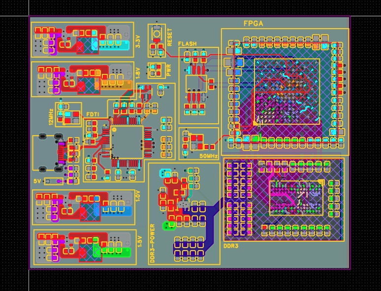
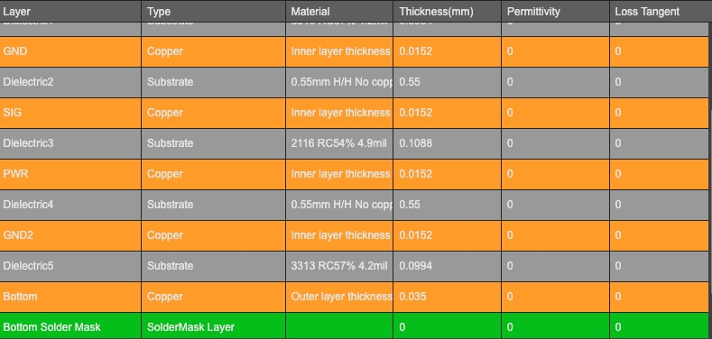
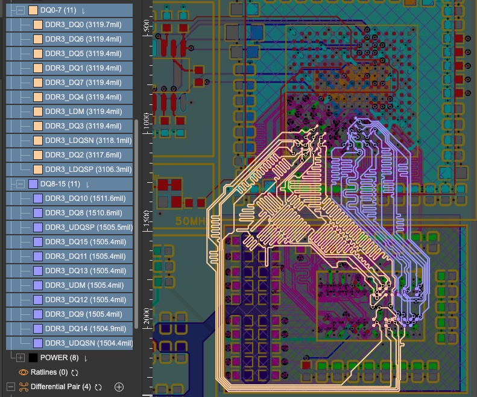

FPGA DDR interface routing board
A 6-layer FPGA PCB built as a test vehicle for controlled-impedance DDR memory routing, from stackup design through bring-up.

Overview
This project is a 6-layer FPGA PCB carrying a DDR memory interface, designed as a dedicated test vehicle for high-speed digital routing rather than for a specific application. The goal was to work through the full loop of controlled-impedance stackup design, length-matched routing, and physical bring-up — then validate the design choices against real measurements once the board is populated and running.
DDR memory interfaces are unforgiving of sloppy layout: address/command lines need consistent 50Ω single-ended impedance, clock and DQS pairs need 100Ω differential impedance, and every data lane needs its flight time matched to its strobe within a tight tolerance. Hitting all three at once, on a 6-layer board, meant the stackup itself had to do real work — continuous ground references under every high-speed layer, split power planes to keep FPGA core and memory I/O rails from interfering with each other, and enough routing discipline to hold length-matching and 3W spacing rules through some genuinely cramped areas near the FPGA's memory interface pins.
The stackup was the first decision and it shaped everything after it: Layer 1 carries high-speed signals as microstrip, Layer 2 is a solid ground plane directly beneath it, Layer 3 handles the DDR data lanes as stripline, Layer 4 splits into separate VCC_CORE and VDDQ power planes, Layer 5 is a second solid ground reference, and Layer 6 takes the low-speed escape routing. Putting a continuous ground plane on both sides of the high-speed layers keeps loop inductance down and return paths predictable, which matters more on a DDR interface than almost any other routing decision. From there, the harder work was in the details — serpentine length-matching each data lane to its strobe, holding 3W spacing between aggressive signals to limit crosstalk, and placing low-ESR decoupling capacitors right at the FPGA's power pins to handle the fast transient current demand of digital switching.


- Fitting serpentine length-matching for the DDR data lanes into the routing channels near the FPGA's memory interface pins, without violating the 3W spacing rule against adjacent signals, took several layout passes to get right.
- Before mounting the FPGA and DDR3 ICs, I validated every step-down voltage rail on the bare board to catch an over-voltage condition early rather than risk damaging the primary components — a sequencing decision I'd repeat on any board this dense.
This project is currently at the assembly stage: surface-mount soldering is underway, and I've validated the step-down voltage rails on the bare board ahead of mounting the FPGA and DDR3 ICs. An initial FPGA programming sequence has run successfully on the partially-populated board. Once the memory ICs are mounted, the next step is running eye diagram tests on the DDR data lanes and TDR impedance testing to check the stackup against its 50Ω single-ended and 100Ω differential targets — results will be added here once that testing is complete.